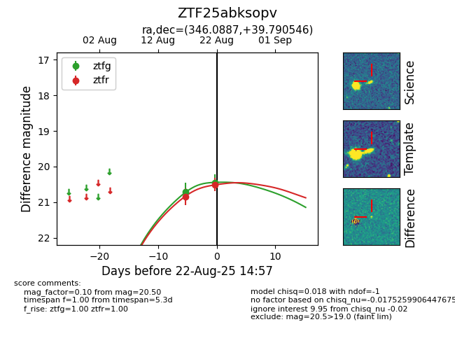

Target ZTF25abksopv at 2025-08-22 14:57, see:
FINK: fink-portal.org/ZTF25abksopv
Lasair: lasair-ztf.lsst.ac.uk/objects/ZTF25abksopv
ALeRCE: alerce.online/object/ZTF25abksopv
alt names
ZTF25abksopv (ztf,alerce)
coordinates:
equatorial (ra, dec) = (346.0887,+39.79055)
galactic (l, b) = (101.5154,-18.58653)
photometry
last ztfg=20.46, ztfr=20.50
2 ztfg, 2 ztfr detections
